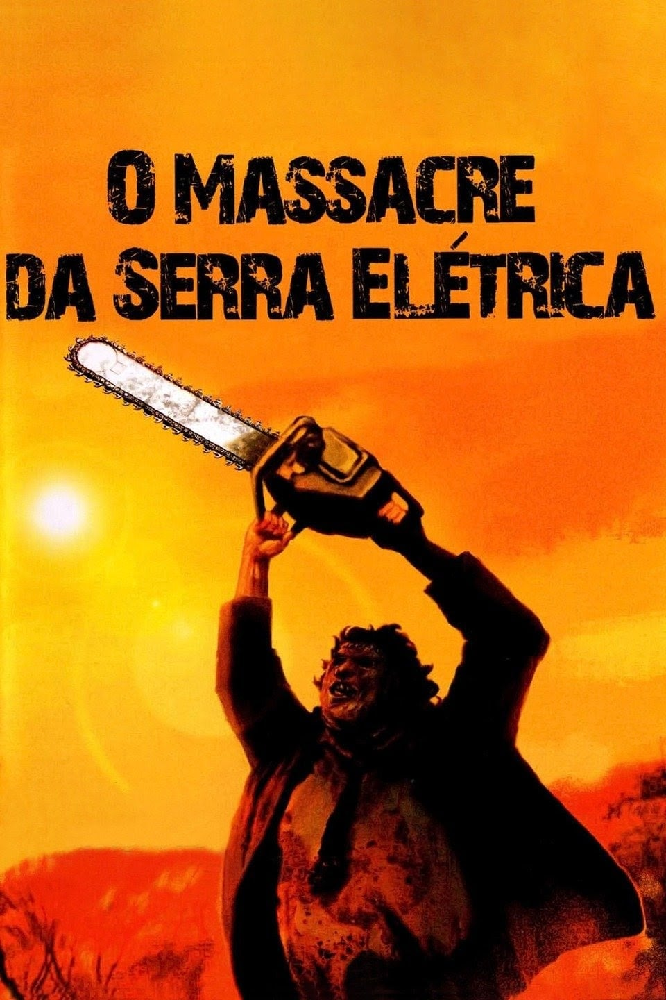

Invocação do Mal 3: A Ordem do Demônio

Lançamento: 2021
Imdb: 6,3/10 
Sinopse: Um dos casos mais sensacionais de seus arquivos começa com a luta pela alma de um
garoto e depois os
leva para além de qualquer coisa que já tenham visto. Esse caso marcou a primeira vez na história
dos Estados Unidos em que um suspeito de assassinato alegou possessão demoníaca como defesa.
Um Lugar Silencioso - Parte II

Lançamento: 2021
Imdb: 7,4/10
Sinopse: Logo após os acontecimentos mortais, até mesmo dentro de casa, a família Abbott
precisa agora encarar
o terror mundo afora, continuando a lutar para sobreviver em silêncio. Obrigados a se aventurar pelo
desconhecido, eles rapidamente percebem que as criaturas que caçam pelo som não são as únicas
ameaças que os observam pelo caminho de areia.
Um Clássico Filme de Terror

Lançamento: 2021
Imdb: 5,7/10
Sinopse: Nesta história de terror cheia de tensão e sangue, os passageiros de um ônibus são
vítimas de
assassinatos ritualísticos.
O Massacre da Serra Elétrica

Lançamento: 1974
Imdb: 7,5/10
Sinopse: Em 1973, a polícia texana deu como encerrado o caso de um terrível massacre de 33
pessoas provocado por um homem que usava uma máscara feita de pele humana. Nos anos que se seguiram
os policiais foram acusados de fazer uma péssima investigação e de terem matado o cara errado. Só
que dessa vez, o único sobrevivente do massacre vai contar em detalhes o que realmente aconteceu na
deserta estrada do Texas, quando ele e mais 4 amigos estavam indo visitar o seu avô.